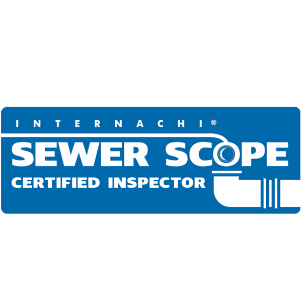
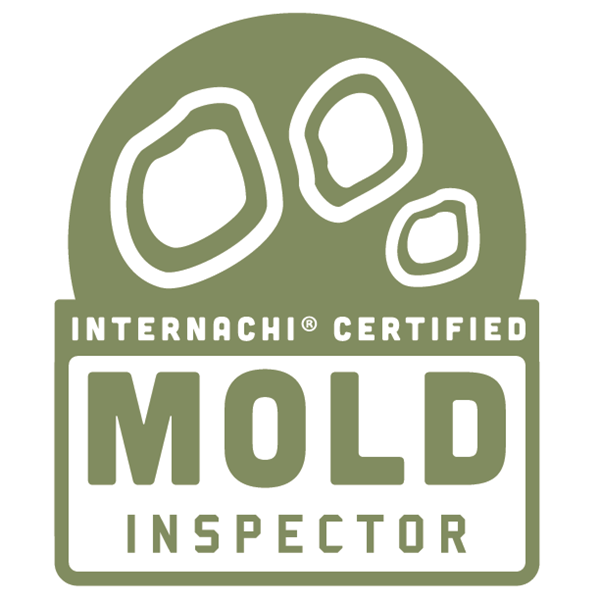
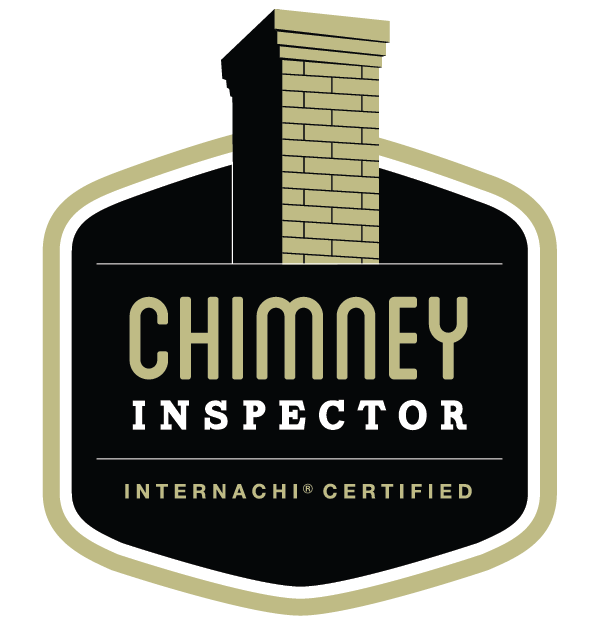
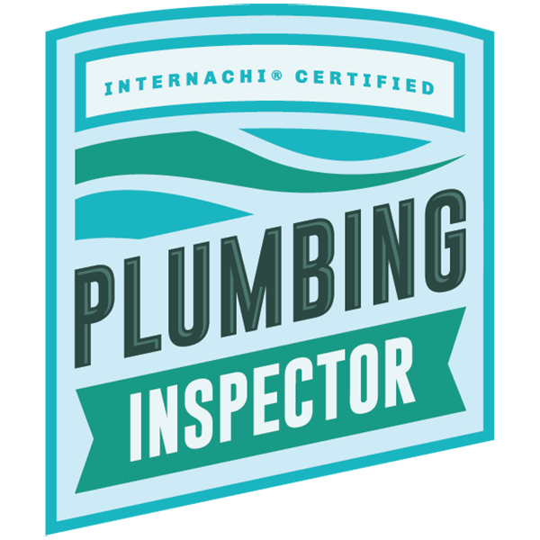

About Not Your Average Joes
A Washington State home inspection company built on honesty, technology, and a complete absence of broker ties. We work for you. No one else.
Why We Started
Not Your Average Joes Home Services, LLC was founded in early 2025 with a simple mission: raise the standard of home inspections and protect people from being taken advantage of. In an industry where speed and volume often come before quality, Not Your Average Joes takes a different approach.
We are not the fastest, and we are not the cheapest. But we are committed to delivering one of the most thorough, detailed, and honest inspections you can get. We use high-quality tools, proven inspection techniques, and real-world experience to uncover issues others miss.
Every inspection is approached with the mindset that this is one of the biggest purchases of your life, and you deserve to know exactly what you're walking into. We are proudly independent, with zero broker affiliations, zero referral arrangements, and zero conflicts of interest. When you hire us, we work exclusively for you.
No Broker Affiliations
We are not approved vendors for any real estate brokerage and we accept no referral fees. Your inspection report reflects what we actually found. Period.
Washington State Born
We're a locally owned, Washington State business, not a franchise from out of state. We know Puget Sound homes: the clay soils, the moisture challenges, the crawlspace conditions that define this region.
Licensed & Accountable
WA State Licensed Home Inspector per RCW 18.280. Every inspection adheres to WAC 308-408C Standards of Practice. You get what the law and our ethics require: thorough, honest, and documented.
Meet the Inspector
Joseph Fallstrom
WA State License #25025346
Joseph Fallstrom
Owner & Certified Professional Inspector · WA State License #25025346
Joseph Fallstrom is a Washington State certified home inspector and the owner of Not Your Average Joes Home Services, LLC. With a background in construction, project management, and property maintenance, he brings a well-rounded, real-world understanding of how homes are built, maintained, and where they fail.
Before becoming a home inspector, Joseph managed large-scale projects, maintained over 100+ rental properties, and worked hands-on in construction, giving him the ability to spot issues that many inspectors overlook. He holds a Bachelor of Science in Business Administration from Central Washington University, where he graduated with honors.
Joseph is known for his straightforward communication, attention to detail, and commitment to doing things the right way, not the fast or easy way.
100+
Rental Properties Maintained
CWU
BS Business Admin (Honors)
CPI
InterNACHI Certified
WA
State Licensed
Certifications & Credentials
- check_circle Washington State Licensed Home Inspector · RCW 18.280
- check_circle InterNACHI Certified Professional Inspector (CPI) · #NACHI24081228
- check_circle InterNACHI Mold Certified
- check_circle InterNACHI Thermal Infrared Certified
- check_circle InterNACHI Sewer Scope Certified
- check_circle AARST/NRPP Radon Certified
- check_circle FAA Part 107 Licensed Drone Pilot · #5288771
- check_circle BS Business Administration · Central Washington University (Honors)
Certified. Qualified. Verified.
Twenty credentials. Each represents training, examinations, and continuing education. Earned, not bought.











Our Technology
Most inspectors bring a flashlight. We bring a FLIR thermal camera, a DJI drone, a professional sewer scope, certified radon and air quality monitors, and lab-grade mold sampling. Technology is not a gimmick. It's how we find what others miss.
thermostat
FLIR Thermal Imaging Camera
Hidden moisture, insulation gaps, electrical hot spots.
FLIR Thermal Imaging Camera
Hidden moisture, insulation gaps, electrical hot spots.
Every inspection includes FLIR infrared scanning at no extra charge. Thermal imaging detects temperature differentials that reveal hidden moisture intrusion, insulation gaps, and electrical hot spots invisible to the naked eye: issues a standard visual inspection cannot find.
videocam
Sewer Scope & Line Locator
Pro-grade camera, depth and location pinpointing.
Sewer Scope & Line Locator
Pro-grade camera, depth and location pinpointing.
A professional-grade sewer scope camera and line locator scans the entire main sewer lateral, from the house to the city main, revealing root intrusion, pipe collapses, bellies, and blockages. The line locator pinpoints depth and location of underground defects.
radio
AARST/NRPP Radon Monitor
48-hour continuous certified radon measurement.
AARST/NRPP Radon Monitor
48-hour continuous certified radon measurement.
Continuous 48-hour radon monitoring using an AARST/NRPP-certified device, the most accurate residential testing method available. Real-time, hour-by-hour readings provide a defensible measurement of radon exposure in the home.
air
Air Quality Monitor
VOCs, particulates, CO, humidity, temperature.
Air Quality Monitor
VOCs, particulates, CO, humidity, temperature.
Real-time monitoring of indoor air quality (VOCs, particulates, carbon monoxide, humidity, and temperature) to identify environmental issues that impact health and comfort. Critical for newly renovated spaces and homes with sensitive occupants.
science
Sporecyte Mold Sampling
Calibrated air sampling, lab-certified species ID.
Sporecyte Mold Sampling
Calibrated air sampling, lab-certified species ID.
Sporecyte professional mold air sampling pump collects calibrated air samples that are analyzed by an accredited laboratory via sporecyte.com. Lab-certified results identify mold species and spore counts so you know exactly what's in the air your family breathes.
flight
DJI Mini 2 SE Drone
Aerial coverage. FAA Part 107 licensed pilot.
DJI Mini 2 SE Drone
Aerial coverage. FAA Part 107 licensed pilot.
Steep roofs, tall chimneys, and multi-story gables get full aerial coverage from a DJI Mini 2 SE drone, flown by an FAA Part 107 licensed pilot. High-resolution aerial documentation is safer and more thorough than ladder-only access.
sensor_occupied
Gas Detectors
Natural and combustible gas leak screening.
Gas Detectors
Natural and combustible gas leak screening.
Professional gas leak detection equipment screens for natural gas and combustible gas leaks at appliance connections, supply lines, and shut-off valves. Identifying gas leaks early protects life, property, and air quality.
water_drop
Pin & Surface Moisture Meters
Confirm thermal findings, eliminate false positives.
Pin & Surface Moisture Meters
Confirm thermal findings, eliminate false positives.
Pin-type and non-invasive surface moisture meters supplement thermal imaging to confirm and quantify water intrusion behind walls, under flooring, and in crawlspaces. Together they eliminate false positives and give contractors actionable data.
speed
Water Pressure Gauges
Identifies pressure-regulator issues early.
Water Pressure Gauges
Identifies pressure-regulator issues early.
Calibrated pressure gauges measure incoming water pressure and identify pressure-regulator issues that cause leaks, fixture failures, and excessive wear on plumbing components. A simple test that prevents expensive plumbing problems.
Accredited Lab Partners
Add-on services are processed through trusted accredited laboratories for third-party verified results. Sporecyte handles mold air-sampling analysis. Precision Analytical Labs handles lead, water, soil, asbestos, and all other lab analysis. The result: defensible, lab-certified data you can act on with confidence.
READY TO MEET
THE TEAM?
Schedule your inspection today or contact us with any questions. Same-day availability. 24/7 response.